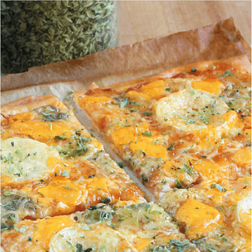

Fire Chicken
- 20 Alitas de pollo.
- 70gr de harina.
- 50gr de manteca derretida.
- 100gr de queso crema.
- 1/2 de ajo en polvo.
- 1/2 cdita de sal.
- Pimenton.
- 3 pimientos picantes.
- 1 pizca de pimienta de cayena.
Pasito a pasito
- Las alitas de pollo las vamos a macerar con una mezcla sencilla. Las guindillas y los pimientos, los pelamos y picamos muy finitos.
- A estos pimientos le incorporamos el ajo en polvo y el pimentón dulce que será en encargado de darle un poco de intensidad a este plato.
- Mezclamos bien y untamos a las alitas que habremos salpimentado previamente, de esta manera se macerarán a las mil maravillas.
- Pasadas unas dos horas encendemos el horno, lo ponemos a 180º para que esté listo a la hora de recibir estas deliciosas alitas.
- Vamos a hacer una mezcla de la mantequilla con el queso crema, de esta manera nos quedarán un poquito más ligeras. Especialmente su usamos un queso light.
- Untamos las alitas con esta mezcla de mantequilla y queso. A continuación, las vamos a rebozar con la harina.
- Colocamos las alitas en una fuente para horno, dejaremos de esta manera el trabajo listo, ahora será cuestión de comprobar cómo el horno actúa.
- Las alitas tardarán unos 20 minutos por cara, más o menos, podemos ir comprobamos el curso de la cocción y darles la vuelta cuando sea necesario.
- Atrévete a probar las mejores alitas picantes caseras que existen, el resultado es impresionante, como de restaurante casero.
Aritos Llorones
- 1 cebolla cortada en aros.
- 150gr Harina de trigo.
- 1 huevo.
- 200ml leche.
- Pan rallado.
- 1 cdita Levadura.
- Sal a gusto.
Pasito a pasito
- Empezamos cortando la cebolla en discos.
- Una vez cortados los aros, pasamos los aros por harina y los reservamos.
- Esa misma harina la completamos con la leche, la levadura y el huevo bien batido.
- En esa masa, rebozamos los aros de cebolla enharinados y posteriormente los pasamos por el pan rallado. Mientras, ponemos el aceite a calentar.
- Freímos los aros de cebolla en tandas de cinco o seis para mantener la temperatura del aceite y para que los aros no se toquen entre ellos.
- Cuando están bien dorados, los escurrimos en un papel absorbente y los llevamos a la mesa.

Nachi Nach
- 200gr topos de trigo o nachos.
- 2 tazas de frijoles negros cocidos.
- 1 cebolla mediana.
- 200gr cheddar rallado.
- 2 tomates rojos o jitomates.
- 4 chiles jalapeños.
- 1 diente de ajo.
- 1/2 ramo de cilantro fresco.
- 1 limón verde.
- Aceite neutro.
- Pimienta negra.
- Sal a gusto
Pasito a pasito
- Precalentar el horno a 200 grados.
- Lavar el cilantro, los tomates, los chiles (si no son de lata) y el limón.
- Cortar el cilantro en trozos menudos hasta llenar el tercio de una taza.
- Cortar el tomate en cubos. Quitar las semillas y la parte aguada del centro.
- Pelar la cebolla y el ajo y cortar en trozos muy pequeños. Mejor aún si se puede triturar el ajo.
- Cortar los chiles en tiras y el limón por la mitad.
- Disponer un par de cucharadas del aceite en un sartén, y hacer un frito con la cebolla y el ajo. Cocinar unos minutos, hasta que la cebolla se empiece a ver un poco transparente.
- Disponer los totopos o nachos en un recipiente grande para horno, de forma tal que se cubra toda la superficie y que queden lo menos superpuestos posible.
- Disponer sobre los nachos una capa uniforme de todo el queso rallado.
- Disponer sobre el queso la mezcla de cebolla, los tomates y jalapeños picados. Espolvorear con sal y pimienta. Incluir en esta capa los frijoles, si es el caso.
- Meter al horno por 7 minutos o hasta que se derrita el queso.
- Luego de sacar del horno, espolvorear con el cilantro picado y con el jugo del limón.
- Servir inmediatamente.

Papi Papitas
- 500gr papa.
- 200gr queso cheddar
- 50cc leche.
- 1 cebolla de verdeo.
- 100gr panceta ahumada.
- Aceite.
- Sal a gusto.
Pasito a pasito
- Cortamos las papas en bastones y picamos la cebolla de verdeo.
- Precalentamos el aceite en la Sartén y freímos las papas hasta que estén doradas.
- Retiramos sobre una fuente con papel absorbente y las salamos.
- En la Sartén doramos la panceta cortada en cubos durante 5’ a fuego máximo.
- Retiramos un poco de la grasa si es necesario e incorporamos el queso cheddar y la leche.
- Cocinamos revolviendo hasta que se derrita el queso y volcamos la salsa sobre las papas
- Decoramos con el verdeo picado y servimos.

La triple Q
- 1/2 kg de harina 000.
- 25gr de levadura.
- 1/2 cda de sal.
- 4 cdas. de aceite.
- 1cda de azucar.
- 1 taza de agua tibia.
- 3 cdas Salsa de tomate.
- Queso gorgonzola.
- Queso Muzzarella.
- Queso Roquefort.
- Oregano seco.
Pasito a pasito
- colocar la levadura y media taza de agua tibia, agregándole la cucharada de azúcar. Mezclar bien hasta que se formen burbujas, tapar con un nylon y dejar levar más o menos 10 minutos.
- colocarla harina y mezclarla con sal. Hacer un hueco en el centro y luego volcar la media taza de agua con la levadura dentro. Incorporar el resto del agua tibia. Unir, con ambas manos, todos los ingredientes y formar una masa. Agregar, en forma de hilo, el aceite y continuar amasando.
- Dejar descansar la masa para pizza alrededor de 15 minutos y luego volver a amasarla sobre una mesa con harina. Dividir la masa en dos bollos del mismo tamaño.
- Estirar la masa hasta lograr un círculo, poner la masa en una fuente para pizza y dejarla descansar en un lugar templado hasta que leve. Alrededor de 15 minutos.
- Llevar a un horno fuerte durante seis minutos.
- Sobre la masa, extendemos el tomate con el dorso de una cuchara.
- Repartir en trozos los diferentes quesos, desparramados por toda la masa.
- Horneamos a 230º C hasta que los bordes de la pizza estén bien dorados.
- La comemos inmediatamente tras espolvorearla con un buen pellizco de orégano que completará su aroma.